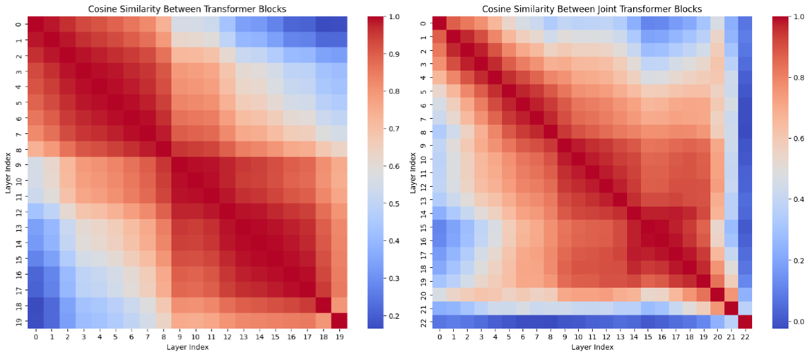
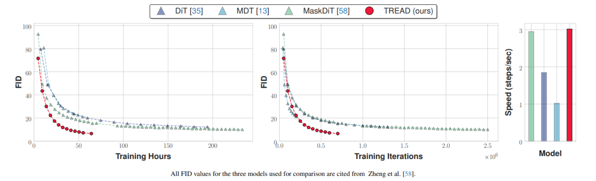

TREAD - Token Routing for Efficient Architecture-agnostic Diffusion Training
Diffusion models dominate visual generation, yet grapple with sample inefficiency and high training costs. Traditional diffusion transformers suffer from quadratic complexity, prompting research into token reduction through masking.TREAD 2501.04765 diverges by preserving token information through predefined routes that strategically reintroduce data in deeper model layers. By combining multiple routes and implementing an adaptive auxiliary loss, enhancing training efficiency without architectural modifications.
Quadratic Complexity
Starting off with the main problem the paper addresses - when a system has quadratic complexity relative to input length, it means the computational cost (time/memory) scales with the square of the input size. For example:
- If the input length is N, the cost grows as O(N²).
- Doubling the input length (2N) quadruples the computational cost (4N²).
- A 256×256 image split into 16×16 patches becomes 256 tokens.
- A transformer would compute 256² = 65,536 interactions per layer.
In many transformer architectures (especially for images/video), tokens (e.g., image patches) are discarded or merged early to reduce computational cost. For example:
- Patch merging (e.g., in Vision Transformers): Combine neighboring patches into fewer tokens.
- Token pruning: Remove "less important" tokens based on heuristics.
- Token Preservation: Early-layer tokens (e.g., high-resolution details) are stored in memory.
- Reintroduction to Deeper Layers: These tokens are later fused with processed features at deeper layers (e.g., via skip connections or cross-attention).
- Efficiency Gains: By avoiding recomputation of discarded tokens, the model retains critical information without the full quadratic cost at every layer.
Routes: Token Highways for Efficient Computation
The paper introduces routes - Which essentially serves as a unidirectional transport for the tokens across layers. formal defination of a route \(r\) in the network architecture is designed to enable flexible information pathways through skip connections, enhancing training efficiency and preserving critical details:
A route \(r\) is formally defined as:
- where \(B+1\) are the total layers in the network \(D^\theta\) indexed from 0 (input) to \(B\) (output).
- Layer set: \( L = \{ D_{l1}^\theta, D_{l2}^\theta, \dots, D_{lB}^\theta \} \), representing the processing layers.
- connection pairs: each pair denotes a direct pathway from layer \(l_{i}\) to layer \(l_{j}\), where \(i\) < \(j\).
With this each route \(r_{i,j}\) decreases the computational cost along its length, as tokens are not involved in any computation up to their reintroduction but also increases the memory footprint as you will have to store the tokens up till reintroduction.
Multiple Routes for further acceleration
Promoting exploration of multiple routes at once, ensuring that more segments of the network can access the noise-space information more regularly. But this is much more complex then using a single route ( Things are not always linear \(:(\) ). Now the complexity arrises as and when the first route \(r_{0,i}\) terminates, tokens are transferred from the input to layer \( D_\theta^{l_{i+1}}\), filling the set of tokens back up to its original size. With this an entirly new set of tokens are created, now the paper suggests on two objectives that should be considered while working with multiple routes :
- Introducing \(x_{t}\) via route \(r_{j,k}\) to layer \( D_\theta^{l_{k+1}}\),
- Utilizing the already computed information from the layers between \(r_{0,i}\) and \(r_{j,k}\) to utilize the models capacity efficiently.
Leveraging Layer Similarities

The above figure represents cosine similarities between Sana transformer blocks and SD3.5L Joint transformer blocks.
I think observed pattern of cosine similarities between layers presents an opportunity for optimizing route selection in multi-route architectures. When two layers exhibit high cosine similarity (e.g., > 0.8), their representations likely capture related features. This suggests that tokens passing through these layers might benefit from selective routing or skipping to avoid redundant transformations. layers with lower similarity scores might represent critical transformation points where full token processing is essential. \[ R(i, j) = \{ t \in T \mid s(i, j) > \tau \land f(t, i) \approx f(t, j) \} \]
- \(T\) is the token set
- \(f(t,l)\) is the feature representation of token \(t\) at layer \(l\)
- \(R(i,j)\) defines the set of tokens that can safely utilize the route from layer \(i\) to \(j\)
Multi-Route Ensemble Loss.
In the above sections we saw that withholding tokens increases task complexity. the added complexity can be managed by adjusting the loss functions, since traditional loss functions can only handle one mask at a time using multiple routes requirests handling multiple masks simultaneously. Each route \(r_{i,j}\) has it own mask operator \(m\), where \(V^k_{m}\) selects tokens for route based on random mask \(m\), \( \overline{V}^k_m \) is the complement operator (selects tokens NOT in the mask), there approch essentailly creates a more sophisticaed loss calculation system that can handle the complexity of having multiple information pathways. \[ L_{\text{dsm}}^k = \mathbb{E}_{x_0 \sim p_{\text{data}}, n \sim \mathcal{N}(0, t^2 I), m} \\ \| \overline{V}_m^k \left( D_\theta^{R^k} (x_0 + n, t) - x_0 \right) \|^2, \] \[ L_{\text{mae}}^k = \mathbb{E}_{x_0 \sim p_{\text{data}}, n \sim \mathcal{N}(0, t^2 I), m} \\ \| V_m^k \left( D_\theta^{R^k} (x_0 + n, t) - x_0 \right) \|^2 \] with this, where \(D_\theta^{R^k}(·,·)\) represents the subnetwork of \(D_\theta(·,·)\) defined by the k-th route in \(R\). Our final multi-route ensemble loss is formulated as \(L\): \[ L = \frac{1}{N} \sum_{k=1}^N L_{\text{dsm}}^k + \lambda L_{\text{mae}}^k \] where \(N\) denotes the total number of sequential routes employed.
Conclusion: The Magic of Routes
